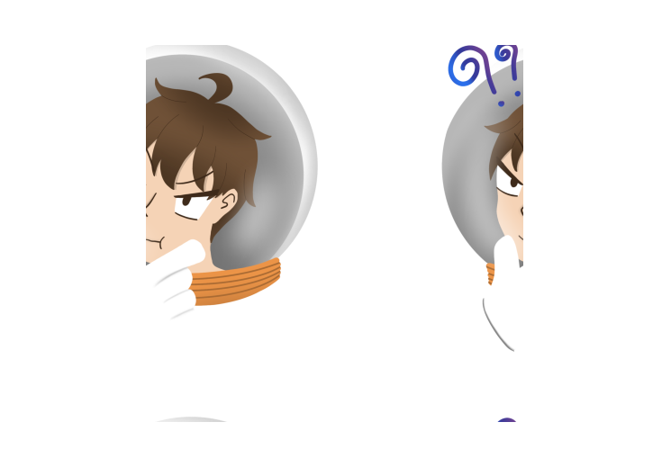
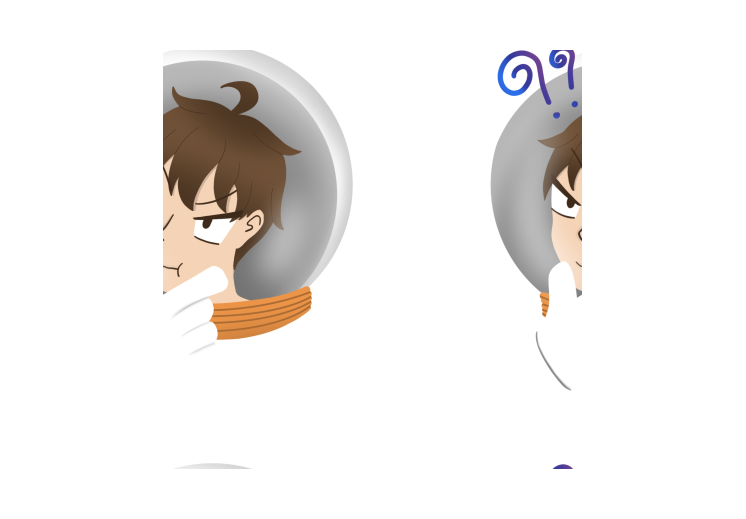
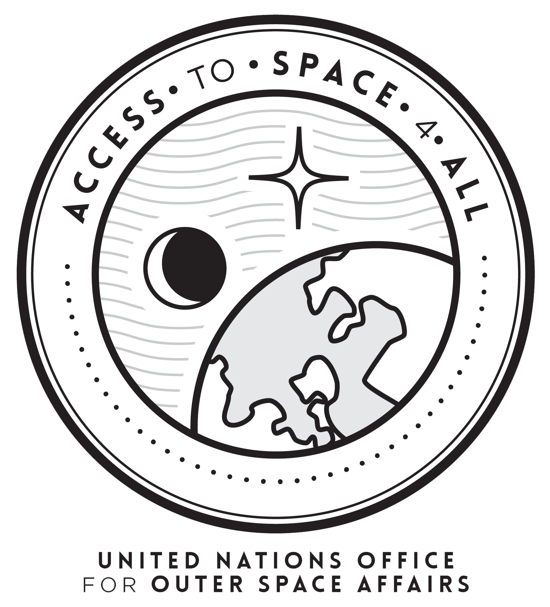
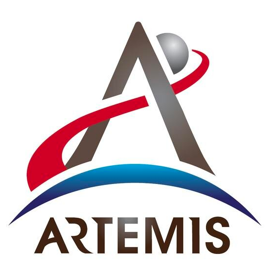
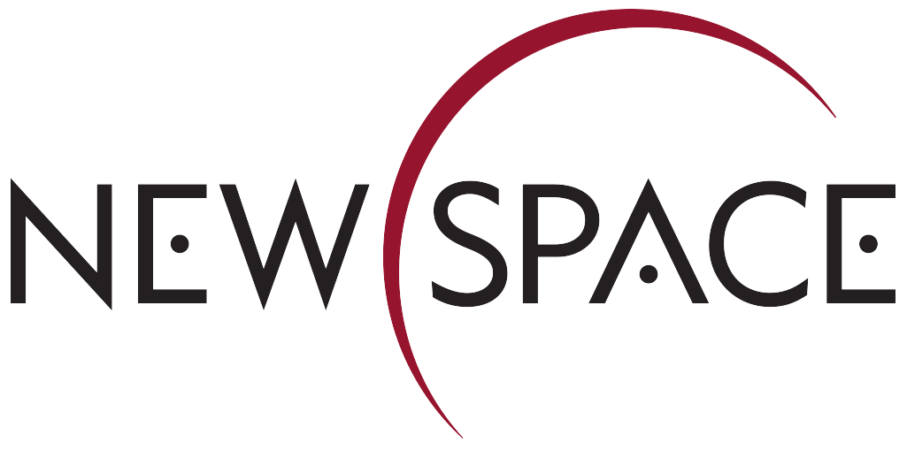

.svg)
.svg)
-3.png)
มีวิธีใดไหม ที่จะทำให้ทุกคนสามารถเข้าถึงอวกาศได้ ?
หากพูดถึงอวกาศ คุณนึกถึงอะไร...

วิทยาศาสตร์
ฟิสิกส์
วิศวกรรม
การทหาร
แล้วทำไมเราไม่นึกถึง...

ศาสตร์อื่น ๆ
สังคม
ภาษาศาสตร์
ศิลปะ
ศาสตร์อื่น ๆ
อีกมากมาย
จริยศาสตร์
ปรัชญา

เพราะอวกาศถูกผูกติดอยู่กับ “โครงสร้างรัฐและอำนาจ”
ย้อนกลับไปไกลในยุคศาสนจักร การศึกษาวิทยาศาสตร์ ดาราศาสตร์
แม้กระทั่งการศึกษาวัตถุท้องฟ้าเองยังเป็นการถูกใช้เพื่อเสริมอำนาจ
ให้แก่ศาสนจักร ความสัมพันธ์ระหว่างวัตถุบนท้องฟ้ากับชนชั้นสูงนั้น
ดำเนินเรื่อยมาจนถึงยุคปัจจุบัน


โชคดีที่ในยุคหลังสงครามโลกครั้งที่สองเราได้เห็นแนวโน้มของศาสตร์ต่าง ๆ ถูกนำมาใช้ในทางสันติมากขึ้น
และเริ่มมีเป้าหมายเดียวกันในการพัฒนาอวกาศเพื่อสันติ หลายปัจจัยที่ชี้นำไปในทางนี้ เช่น

UNNOSA
โดย UN เปิดหน่วยงาน
เพื่อสนับสนุนความสามารถ
ในการเข้าถึงอวกาศของ
ประเทศกำลังพัฒนา

Artemis Accords
ที่ว่าด้วยเรื่องของการ
ใช้ประโยชน์ทรัพยากร
บนดวงจันทร์เพื่อประโยชน์
สูงสุดแก่มวลมนุษย์

New Space
กลุ่มสตาร์ทอัพที่เข้ามา
ลองใช้แนวทางใหม่สำหรับ
ภาคการบินและอวกาศ
แล้วเราจะสร้าง Democratizing Access to Space ได้อย่างไร

ต้องทำการหลอมรวมศาสตร์ต่าง ๆ เข้าด้วยกัน
คือการไม่ปิดกั้นระหว่างสาขาและความเชี่ยวชาญในศาสตร์ต่าง ๆ
สิ่งที่ปิดกั้นเรา (จากความสร้างสรรค์) คือการที่เรามีพื้นหลังมาจาก
ฝั่งสายงานด้านวิศวกรรมและฟิสิกส์ดาราศาสตร์
Consultant
Dr. Supawan Thadsanaprasert
Chamikorn Phiwlaoung
Apichet Komwatcharapong

x
เว็บไซต์นี้คือส่วนหนึ่งของโครงการความร่วมมือของรายวิชา Multimedia Technology คณะเทคโนโลยีสารสนเทศ สถาบันเทคโนโลยีพระจอมเกล้าเจ้าคุณทหารลาดกระบัง ร่วมกับ spaceth.co สื่อออนไลน์ด้านอวกาศ การสำรวจอวกาศ ทั้งในไทยและต่างประเทศ ที่ต้องการพาให้อวกาศเข้ามาใกล้ชิดกับชีวิตประจำวันของพวกเรา